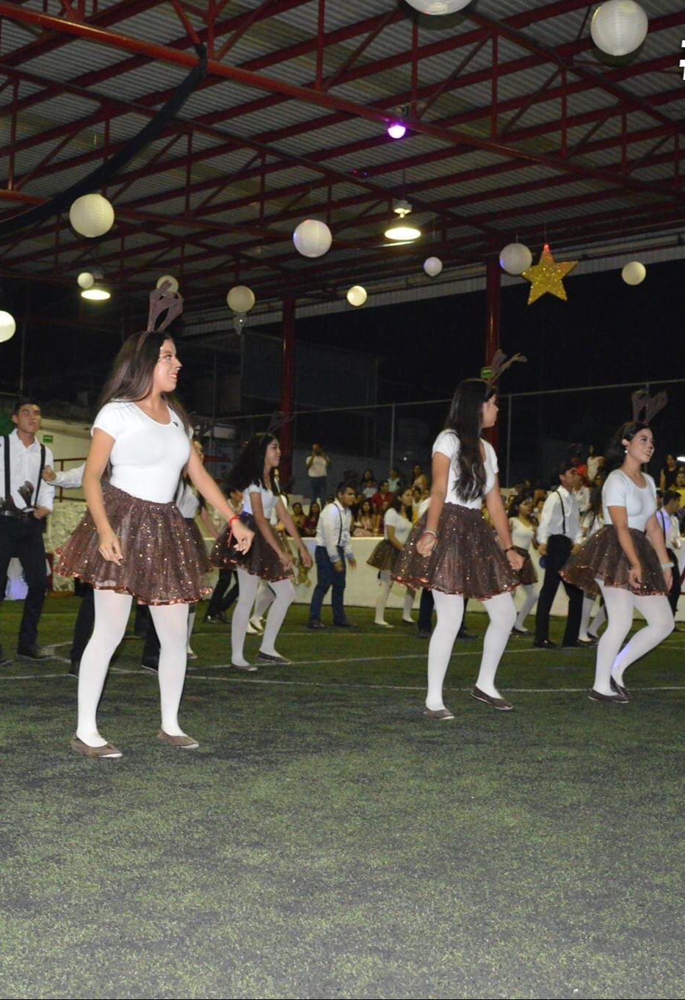

BILLANCICOS
- Llegaron las épocas decembrinas y los billancicos, que son algo muy característico por esas fechas, no podian faltar. Algunos solo cantaba, otros simplemente bailaban, pero como mi grupo era el mejor, hicimos.
- No recuerdo exactamente el nombre de la canción. Nuestra vestimenta fue de renos y el baile fue en parejas. Fue alco cansados los ensayos debido a que juntaron ambos grupos de primer semestre de bachillerato.
- A mi pareja y a mi se nos olvid el baile en plena presentación, pero nada que no se pudiera arreglar. Ambos nos divertimos mucho trabajando juntos
- Disfrutamos todos la actividad y los siguientes numeros que participaron, se notó el esfuerzo y dedicación que le pusieron tanto alumnos cmo maestros.